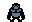
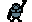
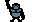
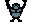

Let's build a building!
Let's build a green building with blue window!
follow through this code!
height = 100
green={255,0,0}
blue={0,255,0}
fill_rect(100,height,50,256-height,green[0],green[1],green[2])
-- drawing windows here
for j=0,2 do
for k=0,10 do
fill_rect(100+5+j*15,height+5+k*15,10,10,blue[0],blue[1],blue[2])
end
end
Let's build buildings!
how about multiple buildings!
numbuildings = 5
heights={}
colors={}
for i=1,numbuildings do
heights[i] = 100+math.random(100)
colors[i] = math.random(20)
end
-- width of a building!
bw =(256/numbuildings)
function draw_buildings()
for i=1,numbuildings do
fill_rect((i-1)*bw,heights[i],bw,256-heights[i],172+colors[i],172+colors[i],160+colors[i])
for j=0,2 do
for k=0,10 do
fill_rect((i-1)*bw+5+j*15,heights[i]+5+k*15,10,10,222,222,222)
end
end
end
end
draw_buildings()
Drawing a Sprite
For game developement, we often use sprite which is a pre-drawn grid image.
I've drawn follwing images for you!





Play with following function!
spr(1,100,30,16,12)
First prameter is the sprite number and rests are start position and size.
you can also paint background for good visilbility like as follows,
fill_rect(0,0,256,256,153,217,234)
spr(3,100,30,40,40)
Animation with sprites
By showing different images alternately, we can make our gorilla to look more alive.
Because we need to call animation routine continously, we are introducing _draw function here.
Internally this function will be called 30times a second.
tick = 0
sprnum = 0
function _draw()
tick=tick+1
if tick % 10 ==0 then
fill_rect(0,0,256,256,153,217,234)
spr(3+sprnum,100,30,40,40)
sprnum=(sprnum+1)%3
end
end
Input Control
Now Let's learn how to control input!
text = ""
y=0;x=0;s=0
function _update()
if btn(0) then text = "UP" y=y-1 end
if btn(1) then text = "DOWN" y=y+1 end
if btn(2) then text = "LEFT" x=x-1 end
if btn(3) then text = "RIGHT" x=x+1 end
if btn(4) then text = "SPACEBAR" s=(s+1)%2 end
end
function _draw()
fill_rect(0,0,256,256,153,217,234)
write_text("button:"..text,3,25,55,8)
spr(3+s*3,100+x,30+y,40,40)
end
Projectile Motion
Now let's learn how to throw banana and how to mimic physics.
Physics is human imagination, simpler explanation of what's happening in the real world.
We can make a fake world by using fake represenation of the real world..
more detail about the projectile motion
banana={state=0,x=50,y=100,angle=0,velocity=0,spr_num=1,READY=0,Launch=1,EXPLODE=2,width=16,height=12}
t=0
g=0.08
banana.angle=1.2
banana.velocity=3.5
function _update()
banana.x = banana.x + (banana.velocity * math.cos(banana.angle))
banana.y = banana.y - banana.velocity * math.sin(banana.angle) + g*t
t=t+1
if math.max(banana.x,banana.y) > 256 then
banana.x = 50
banana.y = 100
t=0
end
end
function _draw()
spr(banana.spr_num,banana.x,banana.y,banana.width,banana.height)
end
Game Rule
We've learned the all tools to make gorillas.
what's the remaning step to actually make a game?
we have to make rules, how we score each player and how a player can actually win a match.
let's make a rule where player can score a point when he or she hits other player with a banana.
They play matches three times and one with larger score wins.
-- score goes up when the banana hits opponent!
player1={score=1}
player2={score=1}
function banana_hit(player)
player.score = player.score +1
end
-- player1 scores
banana_hit(player1)
game={state=0}
function _draw()
fill_rect(0,0,256,256,153,217,234)
if game.state == 1 then
if player1.score > player2.score then
write_text("PLAYER1 WIN",55,100,140,40)
else
write_text("PLAYER2 WIN",55,100,150,40)
end
end
end
function _update()
if player1.score + player2.score >= 3 and game.state == 0 then
game.state = 1
end
end
Gorillas!!
Now by combining everything we've learned, we can confidently make gorillas!
SCREEN_WIDTH=256
SCREEN_HEIGHT=256
numbuildings = 5
heights={}
colors={}
game={state=0}
player1={state=0,x=0,y=0,score=0,spr_num=3,width=32,height=22}
player2={state=0,x=0,y=0,score=0,spr_num=3,width=32,height=22}
banana={state=0,x=0,y=0,angle=0,velocity=0,spr_num=1,READY=0,Launch=1,EXPLODE=2,width=16,height=12}
tick=0
g=0.08
t=0
current_player = player1
hitplayer = 0
function init_game()
for i=1,numbuildings do
heights[i] = 100+math.random(100)
colors[i] = math.random(20)
end
player1.x = 10/10
player1.y = heights[1]-22
player2.x = 220
player2.y = heights[numbuildings]-22
banana.angle = 0
banana.velocity = 0
if player1.score >= player2.score then
current_player = player1
banana.x = current_player.x
player1.spr_num=5
else
current_player = player2
banana.x = current_player.x+15
player2.spr_num=4
end
banana.y = current_player.y-10
hitplayer = 0
end
init_game()
bw =(SCREEN_WIDTH/numbuildings)
function draw_buildings()
for i=1,numbuildings do
fill_rect((i-1)*bw,heights[i],bw,SCREEN_HEIGHT-heights[i],172+colors[i],172+colors[i],160+colors[i])
for j=0,2 do
for k=0,10 do
fill_rect((i-1)*bw+5+j*15,heights[i]+5+k*15,10,10,222,222,222)
end
end
end
end
ex=-1
ey=-1
function update_banana()
if banana.state == banana.Launch then
banana.x = banana.x + (banana.velocity * math.cos(banana.angle))
banana.y = banana.y - banana.velocity * math.sin(banana.angle) + g*t
t=t+1
end
if banana.state == banana.EXPLODE then
banana.spr_num = 2
if ex == -1 and ey == -1 then
ex = banana.x
ey = banana.y
t = 200
end
banana.x=ex-(t%10)/2
banana.y=ey-(t%10)/2
banana.width=16+t%10
banana.height=12+t%10
t=t+1
end
if t > 250 then
ex=-1
ey=-1
banana.state = banana.READY
banana.spr_num = 1
banana.width=16
banana.height=12
t=0
if hitplayer == 0 then
if current_player == player2 then
current_player = player1
player1.spr_num=5
player2.spr_num=3
banana.x = current_player.x
else
current_player = player2
player1.spr_num=3
player2.spr_num=4
banana.x = current_player.x+15
end
else
if hitplayer == 2 then
player1.score=player1.score+1
else
player2.score=player2.score+1
end
init_game()
end
banana.y = current_player.y-10
end
i = math.floor(banana.x/bw)+1
if banana.y > heights[i] then
banana.state = banana.EXPLODE
end
if banana.state ~= banana.EXPLODE then
if banana.y > player1.y and math.abs(banana.x-player1.x)<3 then
banana.state = banana.EXPLODE
--player2.score=player2.score+1
player2.spr_num=6
hitplayer=1
end
if banana.y > player2.y and math.abs(banana.x-player2.x)<3 then
banana.state = banana.EXPLODE
--player1.score=player1.score+1
player1.spr_num=6
hitplayer=2
end
end
-- if banana.x < 0 or banana.y < 0 or banana.x > SCREEN_WIDTH or banana.y > SCREEN_HEIGHT then
-- banana.state = banana.READY
-- t=0
-- banana.x = player1.x
-- banana.y = player1.y
-- end
banana.angle = math.min(math.max(banana.angle,0),3.14)
banana.velocity = math.min(math.max(banana.velocity,0),7)
end
function draw_banana()
spr(banana.spr_num,banana.x,banana.y,banana.width,banana.height)
end
function _draw()
fill_rect(0,0,256,256,153,217,234)
draw_buildings()
tick=tick+1
spr(player1.spr_num,player1.x,player1.y,player1.width,player1.height)
spr(player2.spr_num,player2.x,player2.y,player2.width,player2.height)
spr(7,125,10,32,32)
draw_banana()
write_text("Player1",3,3,48,8)
write_text("Player2",205,3,48,8)
write_text(tostring(player1.score)..">Score<"..tostring(player2.score),90,235,70,16)
if game.state == 1 then
if player1.score > player2.score then
write_text("PLAYER1 WIN",55,100,140,40)
else
write_text("PLAYER2 WIN",55,100,150,40)
end
else
if current_player == player1 then
write_text("Angle:"..tostring(banana.angle),3,14,40,8)
write_text("Velocity:"..tostring(banana.velocity),3,25,55,8)
else
write_text("Angle:"..tostring(banana.angle),200,14,40,8)
write_text("Velocity:"..tostring(banana.velocity),200,25,55,8)
end
end
end
function _update()
if game.state == 0 then
if btn(0) then banana.angle=banana.angle+0.01 end
if btn(1) then banana.angle=banana.angle-0.01 end
if btn(2) then banana.velocity=banana.velocity+0.1 end
if btn(3) then banana.velocity=banana.velocity-0.1 end
if btn(4) and banana.state == banana.READY then
banana.state = banana.Launch
end
update_banana()
end
if player1.score + player2.score >= 3 and game.state == 0 then
game.state = 1
end
end